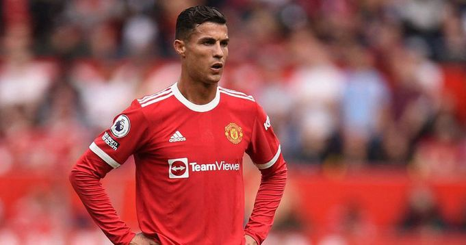
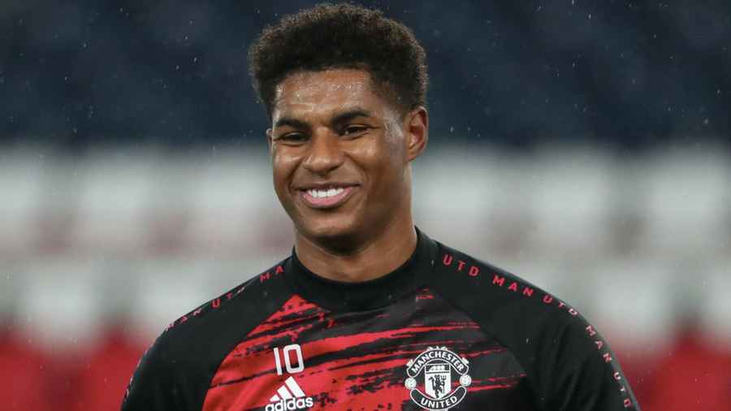
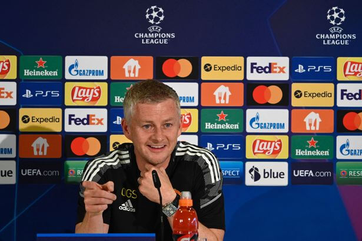
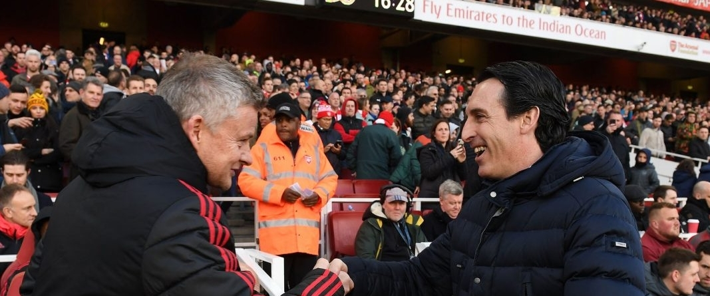

14.10.21
19.10.21
Новости
Криштиану Роналду о карьере тренера
Недавно снова пошли разговоры о том, что Криштиану Роналду хочет стать тренером «МЮ» после завершения карьеры. Сейчас португальцу 36 лет, у него контракт с клубом на 2 года, возможно в 38 он решит повесить бутсы на гвоздь. The Sun уверяет, что Криштиану готов к карьере тренера, чтобы вести своего старшего сына и помочь ему реализовать потенциал на «Олд Траффорд». Интересно, что Роналду ранее спрашивали об тренерской карьере м в интервью почти 6 лет назад. Вот что он сказал: «Прямо сейчас я не заинтересован в том, чтобы стать тренером, но может быть однажды мне наскучит играть, и я почувствую, что мне интересна тренерская работа». «Никогда не говори «никогда». Если я стану тренером, то буду мотиватором, тренер должен передавать свою страсть и талант команде». «Например, если мне нравится показывать дриблинг, простреливать, забивать, то я должен передать это команде, как мотивацию».

Оле Гуннар Сульшер рассказал о состоянии Маркуса Рэшфорда и Амада Диалло.
которые вчера тренировались отдельно от команды, и в частности, рассказал о сроках их возвращения на поле.«Они всё ещё в нескольких неделях от своего возвращения, но мы надеемся, что они будут готовы играть после международного перерыва, – цитирует Оле официальный сайт клуба. Они оба позитивно настроены и упорно работают но, конечно, Маркус провел очень много времени вне поля. Наверное, это самое длительное его отсутствие, но ему был нужен такой перерыв». «Он с нетерпением ждет своего возвращения и не теряет бодрости духа. Он знает, что пропустил предсезонку, но за это время он проделал огромное количество работы, так что скоро он будет готов».

Пресс-конференция Сульшера перед встречей с «Вильярреалом»
Cмотрите прямую трансляцию на нашем Канале
Эмери уверен, что Сульшеру не грозит увольнение из «МЮ»
Главный тренер «Вильярреала» Унаи Эмери не верит, что его коллеге Оле Гуннару Сульшеру грозит увольнение из «Манчестер Юнайтед». Сульшер оказался под серьезным давлением, проиграв три из четырех последних матчей во всех соревнованиях, включая поражение 2:1 от «Янг Бойз» в первом туре группового этапа Лиги Чемпионов. В свое время Эмери продержался только 18 месяцев в «Арсенале», другом большом английском клубе, поэтому Унаи понимает, что чувствует Сульшер. В то же время испанец убежден, что «Юнайтед» сохраняет веру в его коллегу. «Я испытал это на себе, когда работал в «Арсенале». Сульшер — бывший игрок «Манчестер Юнайтед» и главный тренер, который обладает большой поддержкой и уважением». «Он вывел клуб в Лигу Чемпионов в прошлом году и достиг финала Лиги Европы. В этом году он столкнулся со множеством испытаний, и это правда, что у него были плохие результаты, но со стороны клуба было бы неразумно менять свой курс». «Если вы сравните состав «Манчестер Юнайтед» с нашим, игрока за игроком, а также посмотрите на их историю, то поймете, что они являются явными фаворитами».»К той команде, что играла с нами в финале, они добавили Джейдона Санчо, Рафаэля Варана и Криштиану Роналду, поэтому они стали только сильнее». «Я не боюсь «Манчестер Юнайтед». Мы уважаем их, и уважение — это важно. Если ты потеряешь уважение, другая команда может воспользоваться этим», — цитирует Эмери Daily Mail.
| Команда | Игр | Побед | Ничьих | Поражений | Очки |
| Манчестер Юнайтед | 10 | 10 | 0 | 0 | 30 |
|---|---|---|---|---|---|
| Лидс | 10 | 8 | 2 | 0 | 28 |
| Челси | 10 | 9 | 0 | 1 | 27 |
| Ливерпуль | 10 | 9 | 0 | 1 | 27 |
| Тоттенхем | 10 | 8 | 1 | 1 | 26 |
| Арсенал | 10 | 8 | 1 | 1 | 28 |
| Астон Вилла | 10 | 8 | 1 | 1 | 28 |
| Кристал Пэлэс | 10 | 6 | 2 | 4 | 20 |
| Бернли | 10 | 6 | 2 | 4 | 20 |
| Лестер | 10 | 6 | 5 | 0 | 5 |
| Уотфорт | 10 | 4 | 0 | 6 | 12 |
| Барнсл | 10 | 3 | 0 | 7 | 9 |
| Вест Бромвич | 10 | 3 | 0 | 7 | 9 |
| Болтон | 10 | 2 | 0 | 8 | 6 |
| Уиган | 10 | 1 | 0 | 0 | 3 |
| Команда | Игр | Побед | Ничьих | Поражений | Очки |
| Манчестер Юнайтед | 4 | 4 | 0 | 0 | 12 |
|---|---|---|---|---|---|
| Барселона | 4 | 3 | 0 | 1 | 9 |
| Зенит | 4 | 3 | 0 | 1 | 9 |
| Динамо Киев | 4 | 0 | 1 | 3 | 1 |
| Манчестер Юнайтед | 30.11.21 | Ливерпуль |